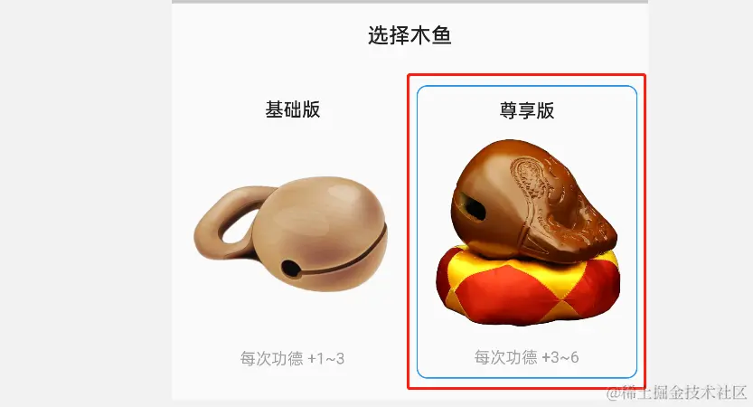
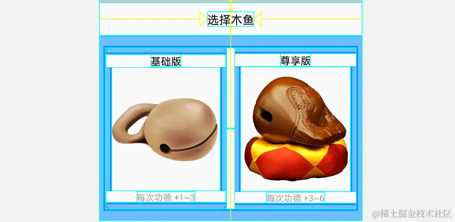
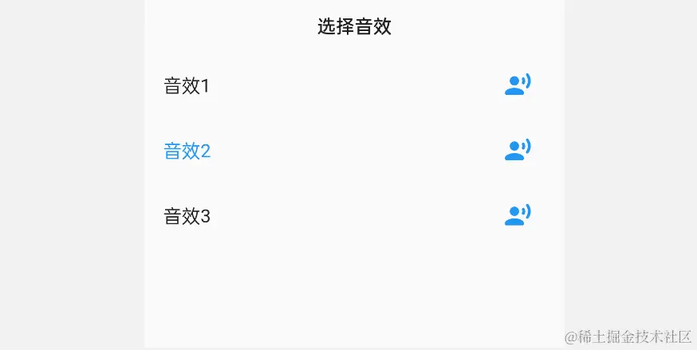

- 01 前言-教程内容导读.md.html
- 02 Flutter 开发环境的搭建.md.html
- 03 新手村基础 Dart 语法 (上).md.html
- 04 新手村基础 Dart 语法 (下).md.html
- 05 Flutter 计数器项目解读.md.html
- 06 猜数字界面交互与需求分析.md.html
- 07 使用组件构建静态界面.md.html
- 08 状态数据与界面更新.md.html
- 09 校验结果与提示信息.md.html
- 10 动画使用与状态周期.md.html
- 11 猜数字整理与总结.md.html
- 12 电子木鱼界面交互与需求分析.md.html
- 13 电子木鱼静态界面构建.md.html
- 14 计数变化与音效播放.md.html
- 15 弹出选项与切换状态.md.html
- 16 用滑动列表展示记录.md.html
- 17 电子木鱼整理与总结.md.html
- 18 白板绘制界面交互与需求分析.md.html
- 19 认识自定义绘制组件.md.html
- 20 通过手势在白板上绘制.md.html
- 21 白板画笔的参数设置.md.html
- 22 撤销功能与画板优化.md.html
- 23 应用界面整合.md.html
- 24 数据的持久化存储.md.html
- 25 网络数据的访问.md.html
- 26 教程总结与展望.md.html
- 捐赠
15 弹出选项与切换状态
1. 选择木鱼界面分析
现在想要的效果如下所示，点击第二个绿色按钮时，从底部弹出木鱼图片的选项。从界面上来说，有如下几个要点：
- 需要展示木鱼样式的基本信息，包括名称、图片及每次功德数范围。
- 需要将当前展示选择的木鱼边上蓝色边线，表示选择状态。
- 选择切换木鱼时，同时更新主界面木鱼样式。
| 木鱼界面 | 选择界面 |
|---|---|
仔细分析可以看出，两个选项的布局结构是类似的，不同点在于木鱼的信息以及激活状态。所以只要封装一个组件，就可以用来构建上面的两个选择项，这就是封装的可复用性。不过在此之前先梳理一下木鱼的数据信息：
根据目前的需求设定，木鱼需要 名称、图片资源、增加功德范围 的数据，这些数据可以通过一个类型进行维护，比如下面的 ImageOption 类：
--->[muyu/models/image_option.dart]---
class ImageOption{
final String name; // 名称
final String src; // 资源
final int min; // 每次点击时功德最小值
final int max; // 每次点击时功德最大值
const ImageOption(this.name, this.src, this.min, this.max);
}
对于一个样式来说，依赖的数据是 ImageOption 对象和 bool 类型的激活状态。这里封装一个 ImageOptionItem 组件用于构建一种样式的界面：

代码如下，红框中的单体是上中下的结果，通过 Column 组件竖向排列，另外使用装饰属性的 border ，根据是否激活，添加边线。其中的文字、图片数据都是通过 ImageOption 类型的成员确定的。
--->[muyu/options/select_image.dart]---
class ImageOptionItem extends StatelessWidget {
final ImageOption option;
final bool active;
const ImageOptionItem({
Key? key,
required this.option,
required this.active,
}) : super(key: key);
@override
Widget build(BuildContext context) {
const Border activeBorder = Border.fromBorderSide(BorderSide(color: Colors.blue));
return Container(
padding: const EdgeInsets.symmetric(vertical: 8),
decoration: BoxDecoration(
borderRadius: BorderRadius.circular(8),
border: !active ? null : activeBorder,
),
child: Column(
children: [
Text(option.name, style: TextStyle(fontWeight: FontWeight.bold)),
Expanded(
child: Padding(
padding: const EdgeInsets.symmetric(horizontal: 8.0),
child: Image.asset(option.src),
),
),
Text('每次功德 +${option.min}~${option.max}',
style: const TextStyle(color: Colors.grey,fontSize: 12)),
],
),
);
}
}
2.底部弹框及界面构建
由于有了新需求，_MuyuPageState 状态类需要添加一些状态数据来实现功能。如下，新增了 imageOptions 对象表示木鱼选项的列表；已及 _activeImageIndex 表示当前激活的木鱼索引：
---->[_MuyuPageState]----
final List<ImageOption> imageOptions = const [
ImageOption('基础版','assets/images/muyu.png',1,3),
ImageOption('尊享版','assets/images/muyu_2.png',3,6),
];
int _activeImageIndex = 0;
点击时的底部弹框，可以使用 showCupertinoModalPopup 方法实现。其中 builder 入参中返回底部弹框中的内容组件，这里通过自定义的 ImageOptionPanel 组件来完成弹框内界面的构建逻辑。
---->[_MuyuPageState]----
void _onTapSwitchImage() {
showCupertinoModalPopup(
context: context,
builder: (BuildContext context) {
return ImageOptionPanel(
imageOptions: imageOptions,
activeIndex: _activeImageIndex,
onSelect: _onSelectImage,
);
},
);
}
很容易可以看出选择木鱼的面板中需要 ImageOption 列表、当前激活索引两个数据；由于点击选择时需要更新主界面的数据，所以这里通过 onSelect 回调，让处理逻辑交由使用者来实现。
--->[muyu/options/select_image.dart]---
class ImageOptionPanel extends StatelessWidget {
final List<ImageOption> imageOptions;
final ValueChanged<int> onSelect;
final int activeIndex;
const ImageOptionPanel({
Key? key,
required this.imageOptions,
required this.activeIndex,
required this.onSelect,
}) : super(key: key);
界面的构建逻辑如下，整体结构并不复杂。主要是上下结构，上面是标题，下面是选项的条目。由于这里只要两个条目，使用 Row + Expanded 组件，让单体平分水平空间：

@override
Widget build(BuildContext context) {
const TextStyle labelStyle = TextStyle(fontSize: 16, fontWeight: FontWeight.bold);
const EdgeInsets padding = EdgeInsets.symmetric(horizontal: 8.0, vertical: 16);
return Material(
child: SizedBox(
height: 300,
child: Column(
children: [
Container(
height: 46,
alignment: Alignment.center,
child: const Text( "选择木鱼", style: labelStyle)),
Expanded(
child: Padding(
padding: padding,
child: Row(
children: [
Expanded(child: _buildByIndex(0)),
const SizedBox(width: 10),
Expanded(child: _buildByIndex(1)),
],
),
))
],
),
),
);
}
在 _buildByIndex 中，简单封装一下根据索引生成条目组件的逻辑，并通过点击事件，触发 onSelect 回调，将条目对应的索引传递出去。
Widget _buildByIndex(int index) {
bool active = index == activeIndex;
return GestureDetector(
onTap: () => onSelect(index),
child: ImageOptionItem(
option: imageOptions[index],
active: active,
),
);
}
到这里，万事俱备只欠东风，在点击木鱼样式回调中，需要更新 _activeImageIndex 的值即可，这里如果点击的是当前样式，则不进行更新操作。另外，在选择时通过 Navigator.of(context).pop() 可以关闭底部弹框。
---->[_MuyuPageState]----
void _onSelectImage(int value) {
Navigator.of(context).pop();
if(value == _activeImageIndex) return;
setState(() {
_activeImageIndex = value;
});
}
最后，主页面中的图片和点击时增加的值需要根据 _activeImageIndex 来确定。这里在 _MuyuPageState 中给两个 get 方法，方便通过 _activeImageIndex 和 imageOptions 获取需要的信息：
---->[_MuyuPageState]----
// 激活图像
String get activeImage => imageOptions[_activeImageIndex].src;
// 敲击是增加值
int get knockValue {
int min = imageOptions[_activeImageIndex].min;
int max = imageOptions[_activeImageIndex].max;
return min + _random.nextInt(max+1 - min);
}
//...
MuyuAssetsImage(
image: activeImage, // 使用激活图像
onTap: _onKnock,
),
void _onKnock() {
pool?.start();
setState(() {
_cruValue = knockValue; // 使用激活木鱼的值
_counter += _cruValue;
});
}
这样，就可以选择木鱼样式的功能，在敲击时每次功德的增加量也会不同。如下右图中，尊享版木鱼每次敲击，数字增加在 3~6 之间随机。当前代码位置 muyu
| 选择 | 切换后敲击 |
|---|---|
这里有个小问题，可以作为思考，这个问题将会在下一篇解决： 如上左图，在切换图片时，会看到
功德+2的动画，这是为什么呢？ 有哪些方式可以解决这个问题。
3. 选择音效功能
选择音效的整体思路和上面类似，点击主界面右上角第一个按钮，从底部弹出选择界面，这里准备了三个音效以供选择。当前音效也会高亮显示，另外右侧有一个播放按钮可以试听：
| 主界面 | 选择音效界面 |
|---|---|
首先还是对数据进行一下封装，对于音频选择界面而言，两个信息数据： 名称 和 资源。这里通过 AudioOption 类进行
--->[muyu/models/audio_option.dart]---
class AudioOption{
final String name;
final String src;
const AudioOption(this.name, this.src);
}
在 _MuyuPageState 中，通过 audioOptions 列表记录音频选项对应的数据；_activeAudioIndex 表示当前激活的音频索引：
---->[_MuyuPageState]----
final List<AudioOption> audioOptions = const [
AudioOption('音效1', 'muyu_1.mp3'),
AudioOption('音效2', 'muyu_2.mp3'),
AudioOption('音效3', 'muyu_3.mp3'),
];
int _activeAudioIndex = 0;
如何同样，在点击按钮时，通过 showCupertinoModalPopup 弹出底部栏，使用 AudioOptionPanel 构建展示内容：
---->[_MuyuPageState]----
void _onTapSwitchAudio() {
showCupertinoModalPopup(
context: context,
builder: (BuildContext context) {
return AudioOptionPanel(
audioOptions: audioOptions,
activeIndex: _activeAudioIndex,
onSelect: _onSelectAudio,
);
},
);
}
目前只有三个数据，这里通过 Column 竖直排放即可，如果你想支持更多的选项，可以使用滑动列表(下篇介绍)。 另外，对于条目而言，Flutter 提供了一些通用的结构，比如这里可以使用 ListTile 组件，来构建左中右的视图。

AudioOptionPanel 界面构建逻辑如下，其中提供 List.generate 构造函数生成条目组件列表；每个条目由 _buildByIndex 方法根据 index 索引进行构建；构建的内容使用 ListTile 根据 AudioOption 数据进行展示。
注: 这里 listA = [1,2,…listB] 表示在创建 listA 的过程中，将 listB 列表元素嵌入其中。
--->[muyu/options/select_audio.dart]---
class AudioOptionPanel extends StatelessWidget {
final List<AudioOption> audioOptions;
final ValueChanged<int> onSelect;
final int activeIndex;
const AudioOptionPanel({
Key? key,
required this.audioOptions,
required this.activeIndex,
required this.onSelect,
}) : super(key: key);
@override
Widget build(BuildContext context) {
const TextStyle labelStyle = TextStyle(fontSize: 16, fontWeight: FontWeight.bold);
return Material(
child: SizedBox(
height: 300,
child: Column(
children: [
Container(
height: 46,
alignment: Alignment.center,
child: const Text("选择音效", style: labelStyle, )),
...List.generate(audioOptions.length, _buildByIndex)
],
),
),
);
}
Widget _buildByIndex(int index) {
bool active = index == activeIndex;
return ListTile(
selected: active,
onTap: () => onSelect(index),
title: Text(audioOptions[index].name),
trailing: IconButton(
splashRadius: 20,
onPressed: ()=> _tempPlay(audioOptions[index].src),
icon: const Icon(
Icons.record_voice_over_rounded,
color: Colors.blue,
),
),
);
}
void _tempPlay(String src) async{
AudioPool pool = await FlameAudio.createPool(src, maxPlayers: 1);
pool.start();
}
}
最后，在 _MuyuPageState 中，选择音频回调时，根据激活索引，更新 pool 对象即可。这样在点击时就可以播放对应的音效。
---->[_MuyuPageState]----
String get activeAudio => audioOptions[_activeAudioIndex].src;
void _onSelectAudio(int value) async{
Navigator.of(context).pop();
if (value == _activeAudioIndex) return;
_activeAudioIndex = value;
pool = await FlameAudio.createPool(
activeAudio,
maxPlayers: 1,
);
}
4.本章小结
本章通过弹出框展示切换音效和木鱼样式，可以进一步理解数据和界面视图之间的关系：数据为界面提供内容信息、界面交互操作更改数据信息。
另外，两个选项的面板通过自定义组件进行封装隔离，面板在需要的数据通过构造函数传入、界面中的事件通过回调函数交由外界执行更新数据逻辑。也就是说，封装的 Widget 在意的是如何构建展示内容，专注于做一件事，与界面构建无关的任务，交由使用者处理。
到这里，本篇新增的两个功能就完成了，当前代码位置 muyu 。目前为止，木鱼项目的代码已经有一点点复杂了，大家可以结合源码，好好消化一下。下一篇将继续对木鱼项目进行功能拓展，并以此学习一下滑动列表。
© 2019 - 2023 Liangliang Lee. Powered by gin and hexo-theme-book.